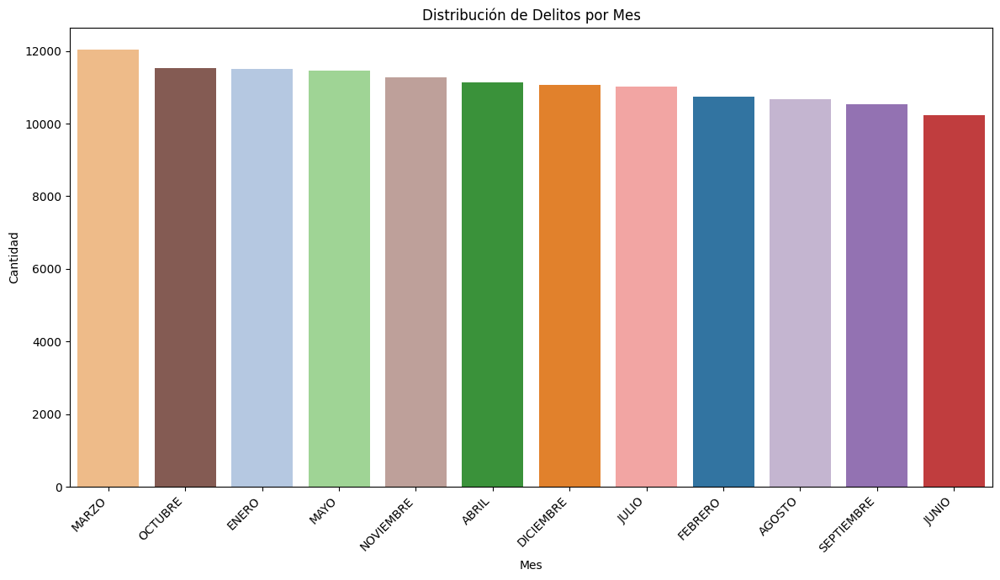
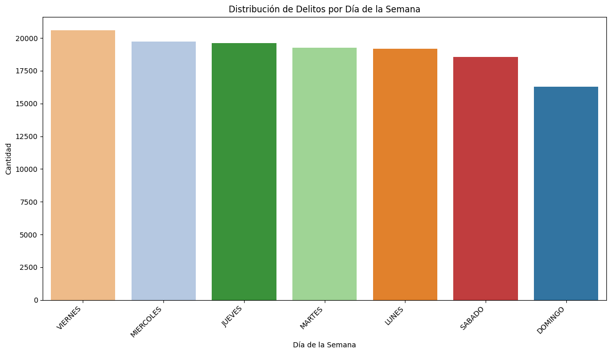
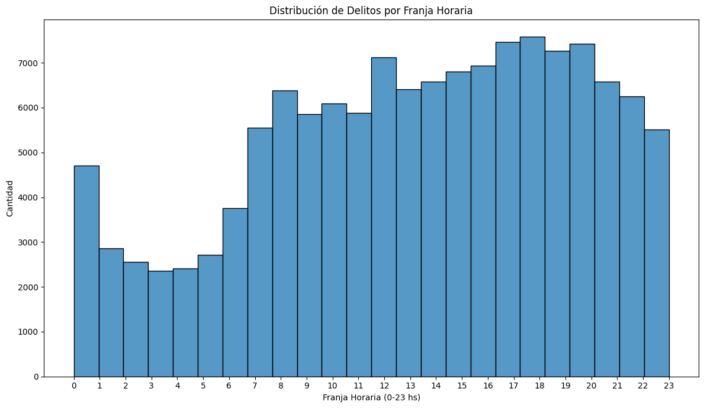
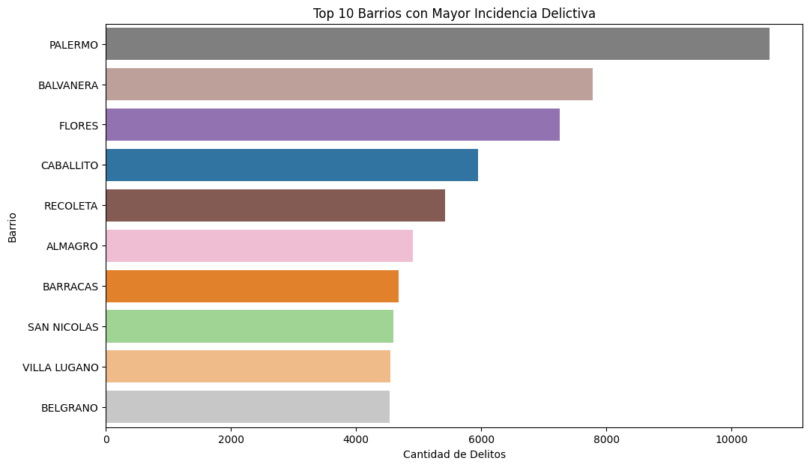
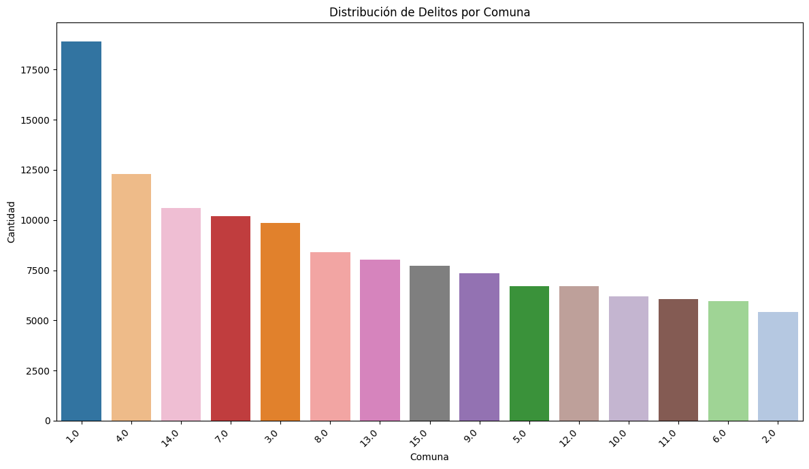
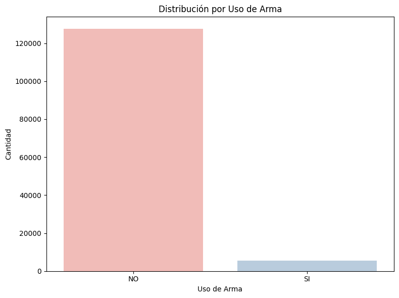
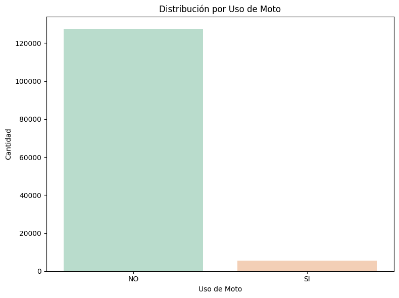
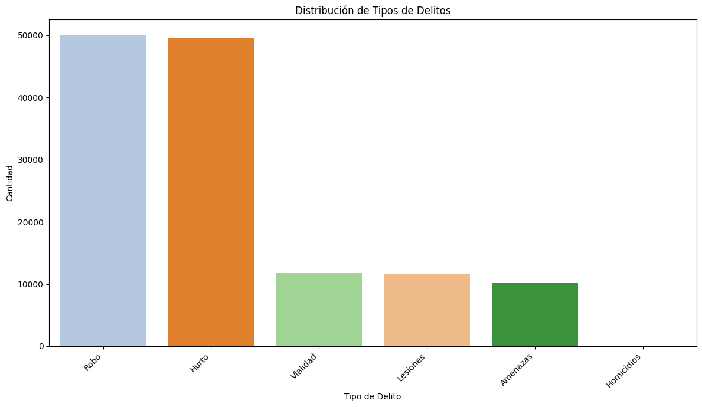
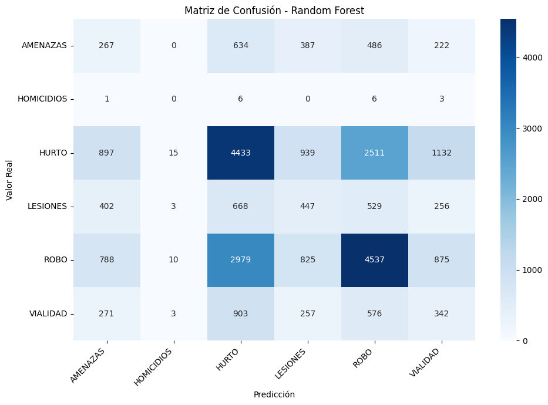
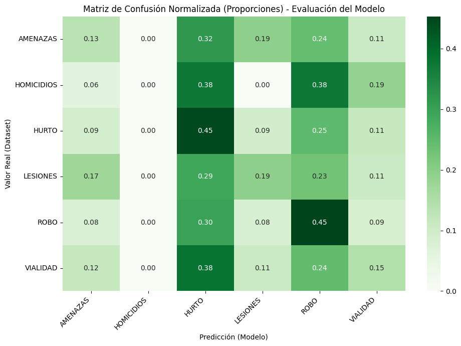

Georreferenciación
Interpretabilidad
Importancia de Variables (Feature Importance)
Muestra la contribución relativa de cada variable del dataset en la toma de decisiones del algoritmo Random Forest Classifier, calculado según la reducción media de impureza de Gini.
Evaluación del Modelo
Métricas Clave de Calidad
Accuracy Global
37.68%
Tasa total de aciertos sobre el set de prueba.
Precisión (Macro)
23.00%
Promedio de exactitud por clase.
Recall (Macro)
23.00%
Capacidad promedio de identificar clases.
F1-Score (Macro)
23.00%
Equilibrio precisión/sensibilidad promedio.
Diagnóstico de desbalance:
El análisis revela una fuerte polarización del modelo inducida por la asimetría del soporte de clases en el dataset (más de 10.000 ejemplos de ROBO y HURTO frente a únicamente 16 casos reales de HOMICIDIOS en la validación). Esto sesga las clasificaciones del Random Forest hacia delitos contra la propiedad e imposibilita la predicción efectiva de ilícitos de baja frecuencia pero alta gravedad (Homicidios dolosos), obteniendo métricas macro del 23.0%.
Data Understanding
Exploración de Datos (EDA)
Visualización de los 11 gráficos históricos generados y analizados en Python durante el proyecto grupal.

Distribución Mensual Acumulada
Ilustra variaciones estacionales menores en CABA. Los picos se ubican a fines de verano y mediados de otoño, mientras que los meses de clima frío presentan declives discretos en la actividad delictiva total.

Análisis de Día de la Semana
Desmitifica el preconcepto del incremento delictivo los fines de semana. Los días de semana laborables (Lunes a Viernes) presentan mayor concentración absoluta debido a la afluencia laboral, comercial y de cercanía.

Análisis Horario y Picos Críticos
Muestra de forma elocuente el pico drástico en la franja de la tarde-noche (18:00 a 22:00 hs), coincidiendo con el retorno laboral a los hogares, frente a la inactividad relativa de las madrugadas.

Top 10 Barrios con Mayor Incidencia Histórica
El análisis revela que Palermo, Balvanera y Flores registran la mayor cantidad de delitos acumulados. Esto es consecuencia directa de ser polos comerciales masivos, nudos troncales de transporte interurbano (Constitución, Once, Retiro) y focos de densidad demográfica transitoria.

Densidad Delictiva por Comuna de CABA
La Comuna 1 (Microcentro, Retiro, San Telmo, Constitución) destaca de forma muy marcada, seguida por la Comuna 14 (Palermo), demostrando que la actividad delictiva se correlaciona con la concentración económica de la Ciudad Autónoma.

Proporción de Uso de Armas
Mide la incidencia relativa de uso coercitivo de armas de fuego y armas blancas en la perpetración de delitos, reflejando niveles de violencia física o amenazas presentes en los partes oficiales.

Modalidad de 'Motochorros'
Visualiza los asaltos perpetrados en motovehículos. Esta variable exhibe patrones geográficos y horarios sumamente localizados, esenciales para estrategias de patrullaje preventivo certero en zonas calientes.

Volumen Total por Tipo de Delito
Demuestra que los delitos contra la propiedad (Robos y Hurtos) saturan el dataset agrupando más del 75% del total de eventos, determinando las prioridades analíticas del equipo.

Matriz de Confusión Absoluta (Random Forest)
Muestra la matriz cruda sobre el conjunto de test. Evidencia de forma clara cómo las categorías dominantes (Robo y Hurto) acumulan el grueso de aciertos y también de clasificaciones erróneas, empujando al clasificador.

Matriz de Confusión Normalizada (Recall por clase)
**Ilustración del sesgo severo:** Al normalizar por fila, se comprueba que Homicidios posee una sensibilidad nula (0.00%). A pesar del entrenamiento de Random Forest, el modelo tiende a clasificar Homicidios (16 registros) como Robos, ya que la optimización penaliza las desviaciones globales, invisibilizando la clase minoritaria de mayor riesgo.